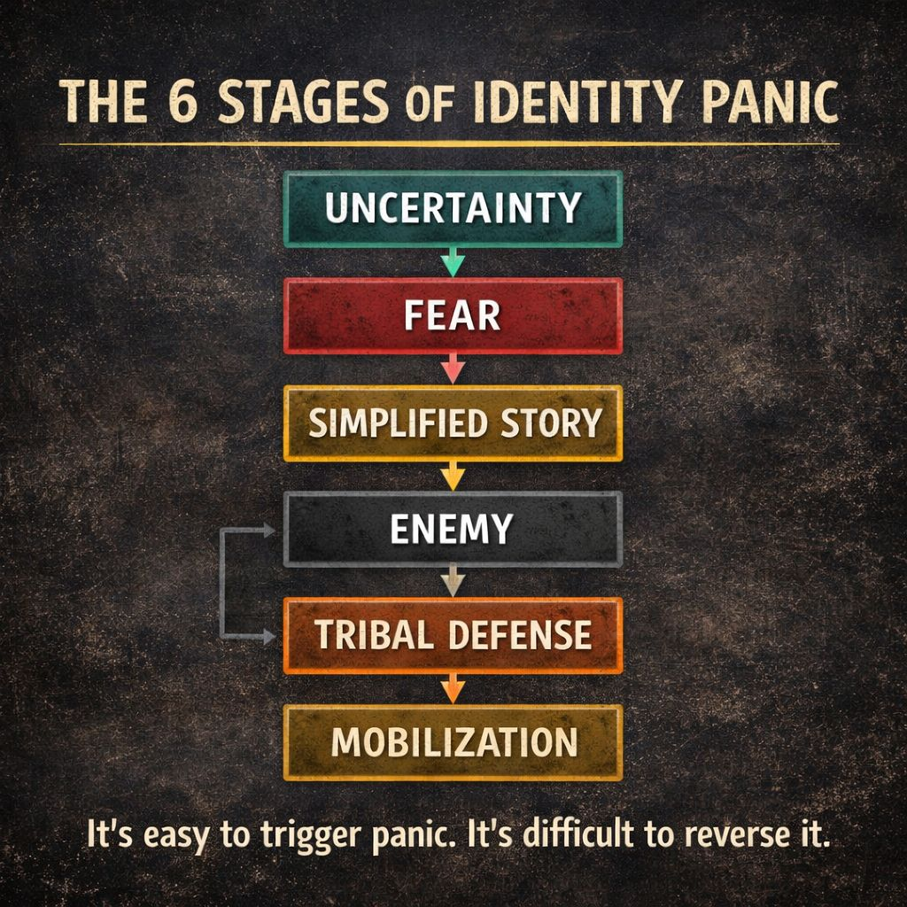

The 6 Stages of Identity Panic

Identity panic doesn’t usually appear all at once.
It tends to move through predictable stages.
- Uncertainty
People feel confused or unstable about what’s happening around them.
- Fear
Uncertainty becomes emotional alarm about possible threats.
- Simplified Story
Complex problems get reduced to a simple explanation.
- Enemy
The story identifies a group or force responsible for the threat.
- Tribal Defense
People rally around their group identity and defend it.
- Mobilization
Emotions turn into coordinated action, conflict, or collective pressure.
Once the cycle starts, each stage reinforces the next.
Identity Panic Toolkit encourages people to recognize these stages early.
The earlier the pattern is noticed, the easier it is to slow the escalation.